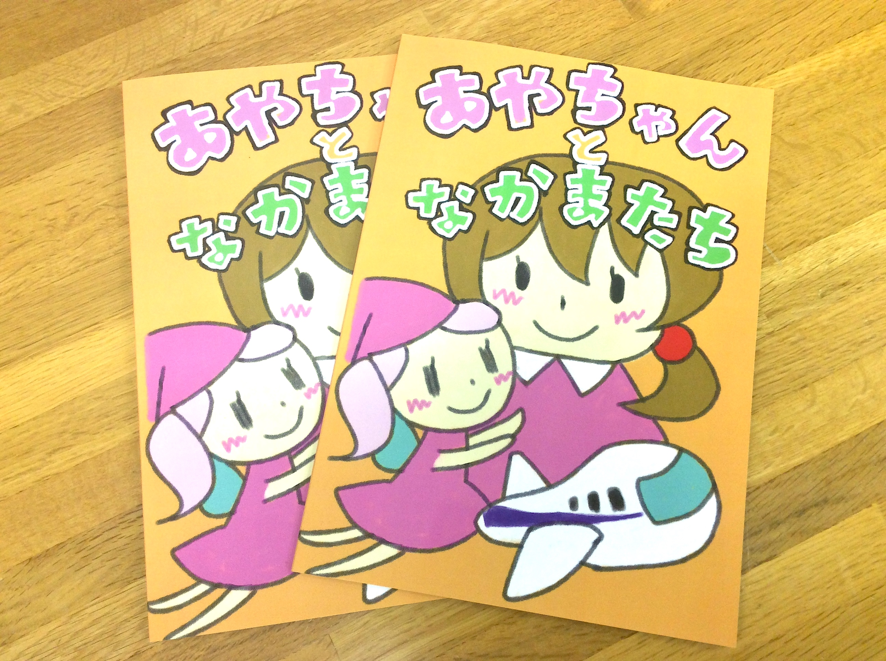
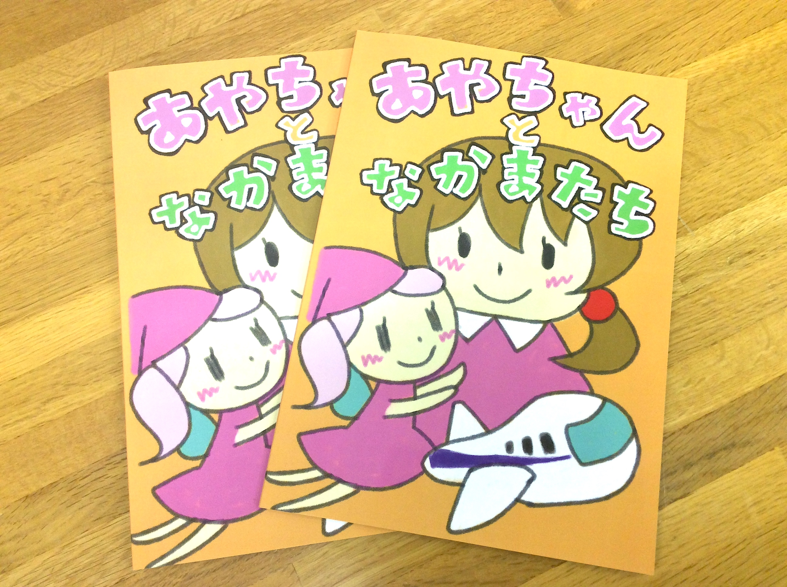
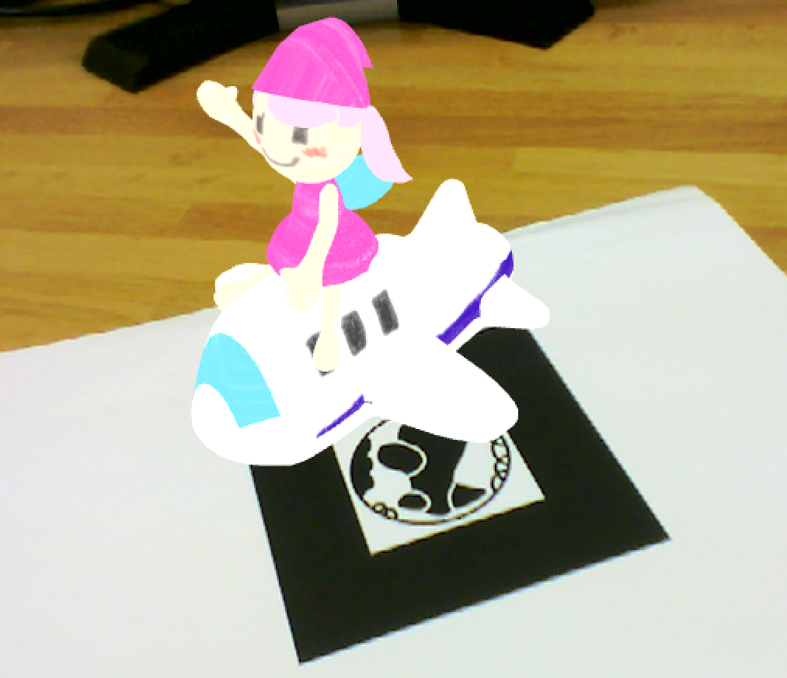
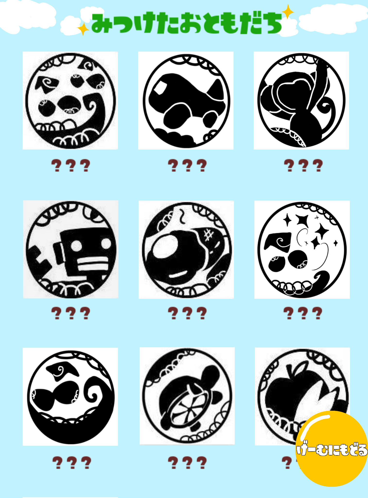
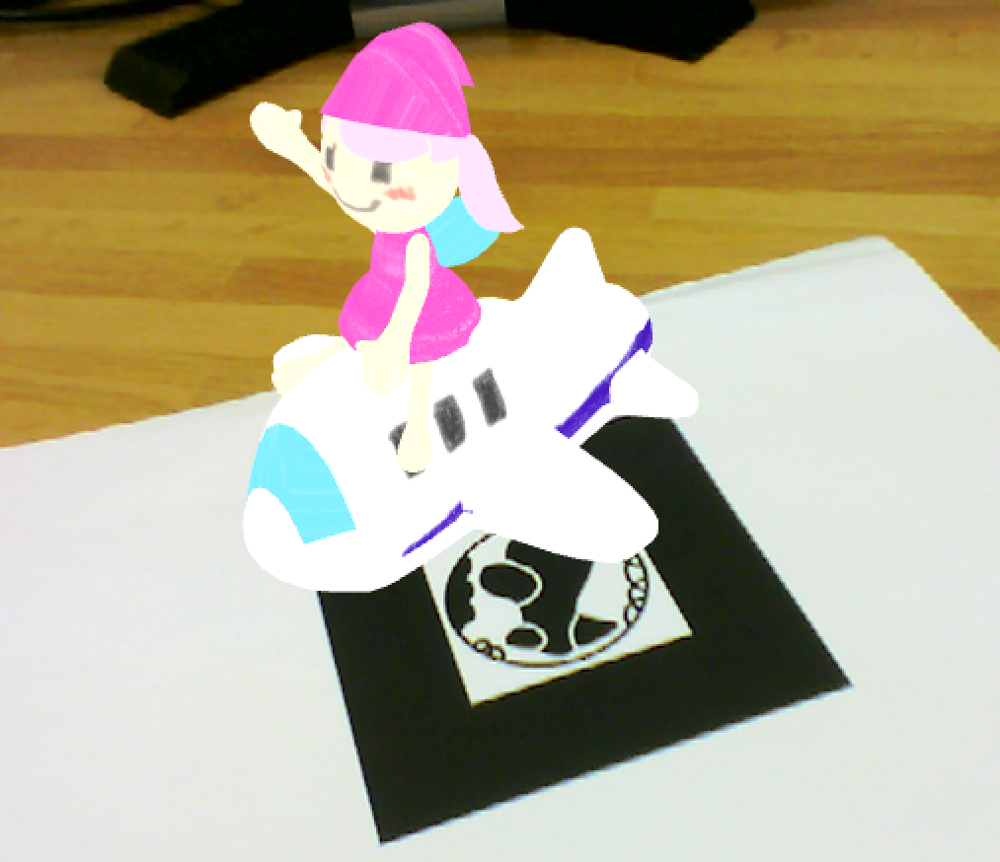
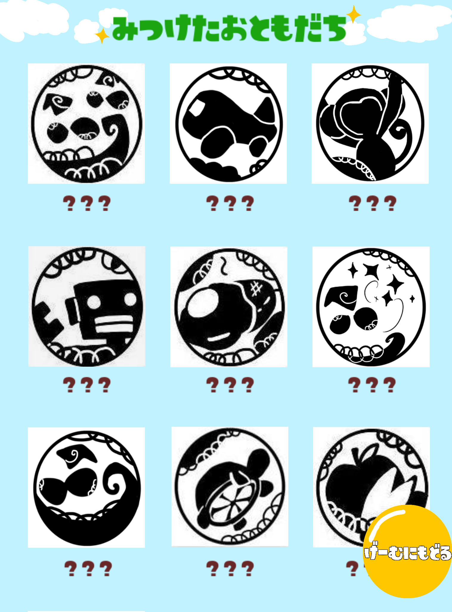

担当部分
企画、ARを含むアプリケーションの実装全般を担当 ※絵本イラスト・3Dモデル作成を除く
制作に当たって考えたこと
入院患児たちが慣れない・親しみが持てない環境である病院や病室からストレスを感じてしま
い、辛い入院生活を送っている上に治療自体にも悪影響が出てしまっているという問題に対し
て、従来のように絵本やおもちゃ等に意識を向けさせることによって「気を紛らわせる」とい
う一時的な方法ではなく、ストレスの一つの原因となっている入院環境という空間そのものの
印象を改善することが入院患児たちの根本的なストレス対策に有効なのではないかと考えまし
た。そこで、
ARアプリと絵本を制作することによって「親しみを持てない現実」である病室
のイメージを「楽しい非現実」のイメージで結びつけ上書きすることを目指しました。その他
、アプリとして楽しく遊んでもらうために、見つけたARマーカーを確認できるコレクション機
能や、画面を触った時の音のインタラクション要素を追加しました。
作品のストーリー
病院や病室には見えない妖精や動物が実はたくさんいて
、病気や怪我が治るのを陰で手伝って
くれている。彼らは普段は見ることができないけれど、特別なカメラ(スマ
ートフォン)で探せ
ば姿を見ることができる。
開発環境
Unity(C#)
Xcode(objective-c)
Vuforia(ARの実装)
 

 


